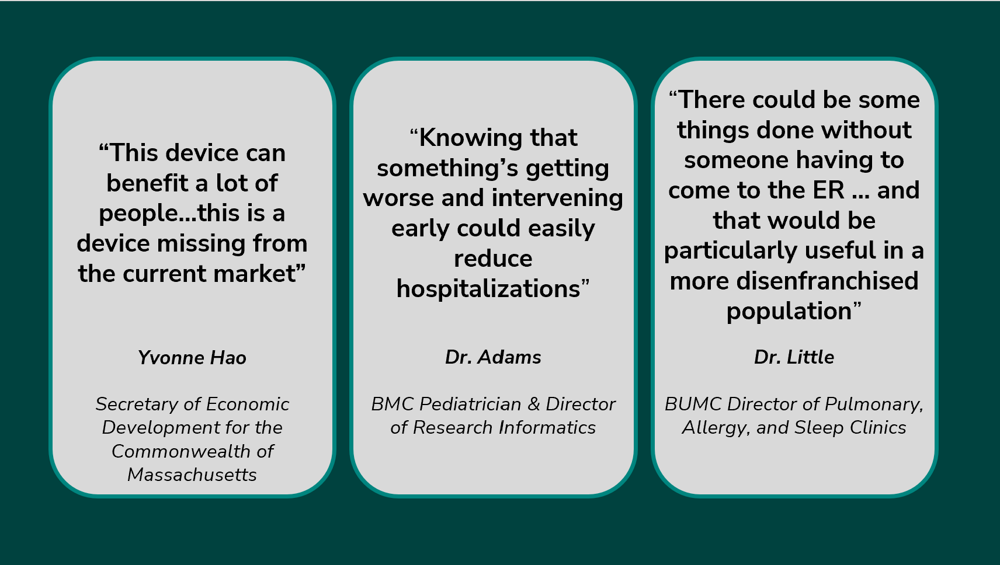
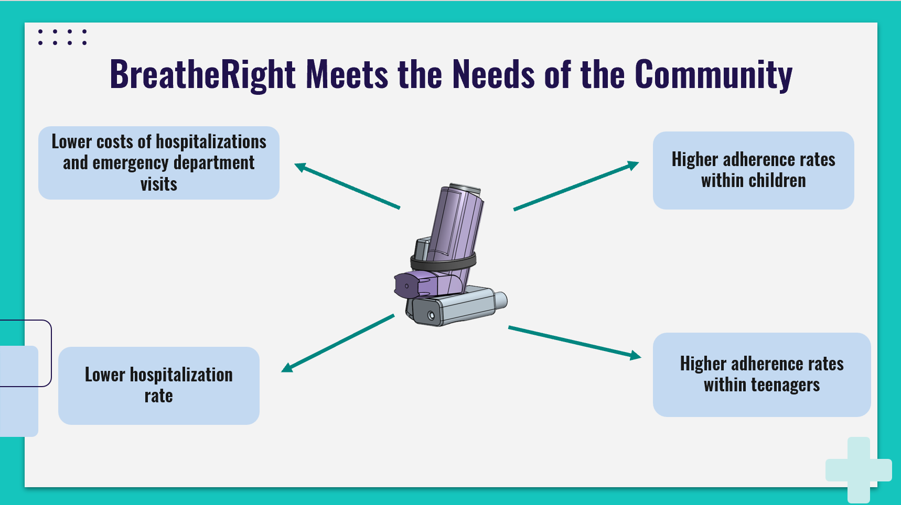
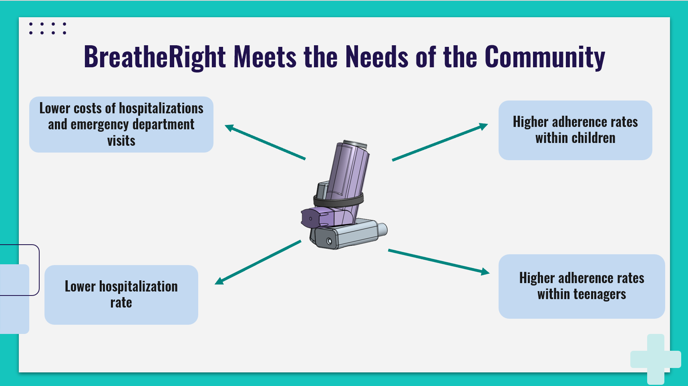

Projects
BreatheRight (September 2023- Present)
BreatheRight is a novel Biomedical Diagnostic Device that tracks inhaler medication usage, the user's pulmonary function, and also provides autonomous warnings for any incoming respiratory attacks. Our mission was to find a convenient way to monitor pulmonary function in people suffering from asthma to help them manage their respiratory illness better. We wanted to develop a device that was impactful in the long-run, specifically for disenfranchised communities to help reduce the financial burden created by numerous emergency department visits and hospitalizations due to uncontrolled asthma. BreatheRight is what solidified my passion for product development as I thoroughly enjoyed the entire process of developing the device, researching the market, and getting to meet and connect with such diverse sets of people. We followed the Design Thinking Process to develop this device, and using this method we were able to develop a refined prototype that has impressed the judges and audience of two engineering competitions and MedTech industry partners enough to have received $3500 in awards. We have now entered our project to the prestigious 'NIH DEBUT competition' as well as the Medtronic 'BMES student Design competition.'
Skills I have gained and developed from this project:
- Market Analysis
- FMEA Tables
- Electric Circuit Analysis
- Quality Assurance
- Business Presentations/ Communication
- Leadership
- CAD (OnShape)
- UI Wireframe Design
- Arduino (code)
 

FPGA Tennis Game
My Friend and I developed a ping pong game on an FPGA using Verilog as part of a course (EC311- Introduction to Logic Design).
Two-Player Game rules:
- Any player can double click their button and the game will start
- The score increments each time the opponent misses the 'Ball' and the game continues until one of the players score total of three.
- The speed of the ball increases as it is 'hit' from one side to another and if a player misses, the speed resets to its original speed
Single-Player (squash mode) Game rules:
- Player can click their button and the game will start
- The score increments each time 'Ball' is 'hit'
- The speed of the ball increases as it is 'hit' from one side to another and if a player misses, the score resets to zero
This was a very rewarding project which I enjoyed doing a lot because we were required to create a game on an FPGA with very little introduction to verilog, we had to configure the seven segment LED display with no working knowledge of it, and we had a major time constraint. This method of instruction is usually very beneficial for me because it allowed me to get as creative as possible and I was able to learn a new programming language in a much quicker way.
Automated Wheelchair Lights
A team of three other students and I developed user-friendly, detachable, rechargeable, and voice-controlled wheelchair lights that automatically respond to the brightness of the environment and provide front/rear illumination for people with mobility-related disabilities as part of a course (EK210- Introduction to Engineering Design). We were able to create a working prototype which used 3 housing components, one for the 12V battery and the circuit, and the other two for front and rear illumination. The most difficult part was configuring the voice module but we managed to make it work and create a fully functional device. The entire process was incredibly challenging but that is what made it so fun as it was my first time using tinkering techniques, developing a circuit to actually create a functioning device, learning arduino code, and coming up with creative ways to overcome unexpected obstacles/bugs.
Skills I have gained and developed from this project:
- Arduino (code)
- Sensors
- Voice Modules
- Business Presentations/Communication
- Leadership
- Electric Circuit Analysis
- CAD (OnShape)
- Soldering/ Laser cutting/ Milling/ Drilling
Truss Project
My friend and I developed a Truss within strict cost, time,member length, and load constraints as part of a course project (Engineering mechanics I). Our Truss held up to 90 ounces before it began to buckle which is the highest load anyone's truss was able to hold (out of the entire engineering batch of 2025). we optimised our truss dimensions based on load, and tried to distribute the load across all of the compression joints as equally as possible. The biggest constraint in regards to this was the minimum member length of 7 inches. Luckily, we ended up with a good load-to-cost ratio of $2.44 per ounce, and 0.409 oz per dollar. An important decision we made while designing the truss was to create an arch as we learned that this would allow the truss to contain more members while also maintaining the required geometry. The arch was perhaps the most insightful element of our project.